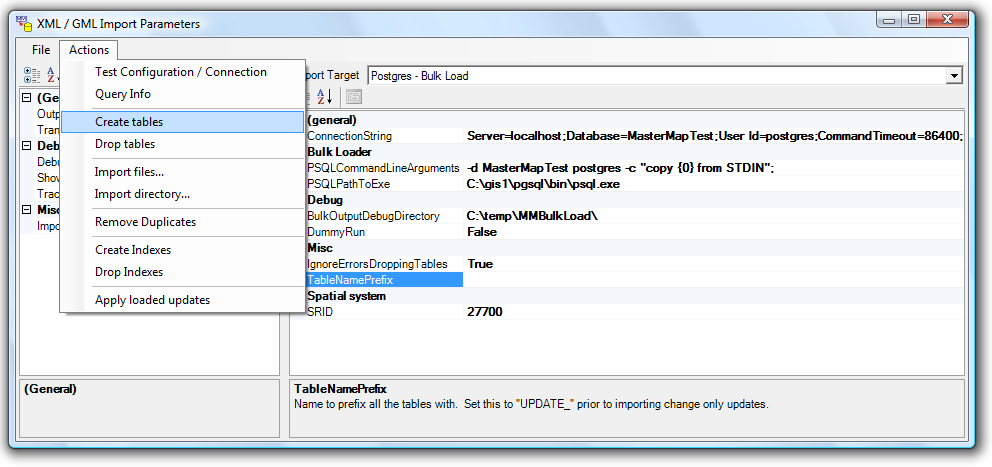
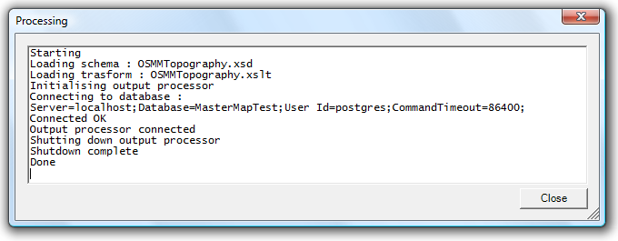

First, get Postgres and the GIS extensions installed. For Windows, the PostGIS instructions currently say...
"When you install PostgreSQL, do not install the PostGIS included in the PostgreSQL installer, it is often a few versions behind. Instead, use the separate PostGIS installer available here.". If you're running on 64 bit windows then you may need to replace "Program Files" with "Program Files (x86)" when you install PostGIS.
Create a database to store your MasterMap data using 'template_postgis" as a template and UTF8 encoding. There are some characters with accents in the dataset that will cause problems otherwise. To check the spatial extensions are loaded, you can go into PgAdmin and in Databases > MasterMap > Schemas > Public > Functions, you should see entries with names like 'addbbox'. There's plenty of documentation on doing this elsewhere.
The importer streams the data directly into PSQL.EXE to do a bulk load. For some fairly obvious reasons, there's no way of specifying a password on the PSQL command line and it doesn't read from standard input. We need to disable the password for local connection.
This can be done by either setting an empty password for the database or setting local connections to trusted.
To set Postgres to trust local connections, you need the following line in your "Data\pg_hba.conf"
host all all 127.0.0.1/32 trust
I'm afraid getting the permissions correct can be a bit of a faff.
UTF8 encoding is used by MasterMap data and the importer. I would recommend you use UTF8 encoding internally within postgres.If you need to specify a port or other details then see the relevant external links (both for the connection string and the PSQL commandline)
| Parameter | Description |
| ConnectionString |
NPGSQL connection string used to connect to the database. Value should be: Server=DatabaseServer;Database=DatabaseName;User Id=Username;CommandTimeout=86400; Documentation for the connection string is in the 'Connection String parameters' http://npgsql.projects.postgresql.org/docs/manual/UserManual.html |
| PSQLPathToExe |
When bulk loading data into the database, we run PSQL.EXE and pipe the data into STDIN. An example might be:
PathToPSQL
You can press the browse button to locate your PSQL executable.
|
| PSQLCommandLineArguments |
Command line parameters to pass into PSQL to initiate the bulk load. The {0} string will be replaced with the table name.
-d DatabaseName postgres -c "copy {0} from STDIN";Documentation on the PSQL command line can be found here: http://www.postgresql.org/docs/8.1/static/app-psql.html |
Once you are happy with your settings, try selecting Actions > "Test Configuration / Connection" from the menu. This will test the ConnectionString parameter is working correctly.

When you're happy with them select File > "Save Defaults" from the menu and it will write a Default.XMLImport file in the same directory as the application.
This only tests the 'ConnectionString' setting. The PSQL settings can only be tested by running an import.
From the menu, select Actions > Create Tables.
The output should be as per CreateTables.txt
From the menu, select Actions > Import Files. Select the XML files or zipped XML files you wish to import and select OK.
If you're just testing out the process, you can get some
sample data from the Ordnance Survey:
http://www.ordnancesurvey.co.uk/oswebsite/products/osmastermap/layers/topography/sample.html
Try a small file first as some errors will only appear when you get to the end. You can import the same file several times then remove duplicates afterwards.
The output should be as per ImportData.txt
The import process will log some data when it has finished. To get simple information from the database, select Actions > Query Information.
The output should be as per QueryInfo.txt
If you've imported several tiles, objects that are on the boundaries between the tiles will be in the database twice. To remove these tiles, select Actions > Remove Duplicates.
The output should be as per RemoveDuplicates.txt
This step will create a spatial index on the geometry in the map and put the map into the correct spatial reference. You cannot import any data while the indexes are present. To add the indexes, select Actions > Create Indexes.
The output should be as per CreateIndexes.txt
On the right hand side of the import window, set the TableNamePrefix to 'UPDATE_'. This will append UPDATE_ to all table names so we can import our change only files into a different location.
From the menu, select Actions > Create Tables
From the menu, select Actions > Import Files. Select the change only update files to import.
If you have imported multiple change only update files, select Actions > Remove Duplicates to remove duplicate items (this is not essential)
From the menu, select 'Apply Loaded Updates'. For each table, this will...
You can convert data from OS grid references (known as OSGB1936 or EPSG:27700) to Latitude and Logitude systems used by GPS (known as WGS84 or EPSG:4326). To do this, enable the "ConvertToWGS84" option to true and specify the SRID of 4326.
The conversion is different from that available in PostGIS and PostGIS does not include the OSTN02 dataset used by Ordnance Survey. If you're mainly working with WGS84/GPScoordinates, I recommend you use this option. If you're mainly working with data surveyed in the UK then it won't be appropriate. If you get it wrong, the errors in coordinate conversion will be of the order of 7 meters.
A database schema and transformation have been provided to import OS AddressLayer 2 data. Set the OutputSchema to 'OSMMAddressLayer2.xsd' and the Transform to 'OSMMAddressLayer2.xslt' if you wish to import address layer 2 data.
The import process may not be complete, and you may wish to modify the XSL file to process additional attributes.
You may find these SQL statements handy if you want to perform some of these actions from postgres directly. CannedSQLStatements.txt.
Some common errors are below. Table names may change.
ERROR: 42883: function addgeometrycolumn("unknown", "unknown", "unknown", integer, "unknown", integer) does not exist
PostGIS Spatial extensios have not been loaded for this database. Recreate it using the postgis template or run 'lwpostgis.sql' and 'spatial_ref_sys.sql' on the database.
ERROR: 42P07: relation "topographicpoint" already exists
As the error implies, the table already exists. To remove the tables, you can run Actions > Drop Tables.
TopographicPoint : STDERR : ERROR: relation "topographicpoint" does not exist
You have not created the tables. Chose Actions > Create Tables from the menu and run the import again.
Error : ERROR: 42P01: relation "topographicpoint" does not exist
You have not created the tables. Chose Actions > Create Tables from the menu and run the import again.
STDERR : ERROR: new row for relation "topographicpoint" violates check constraint "enforce_srid_geom"
The spatial index is present. We load data in a "Well Known Binary" form which does not specify a coordinate system but the database constraint forces the spatial reference to UK grid references so the insert fails. Choose Actions > Drop Indexes, run the import again, then choose Actions > Create Indexes.
ERROR: 42704: constraint "enforce_srid_geom" does not exist
Spatial indexes for this table have been broken. Manually recreate the indexes or drop the table and recreate it.
ERROR: 42P07: relation "topographicpoint_withduplicates" already exists
An error has occured while previously removing duplicates.
If the process fails in the middle, the database will be left in an odd state. The easiest thing to do is to delete all the tables and start again.
If you have a lot of data and wish to revert back to an old state after an update, you may wish to delete the original table and rename the "_WithDuplicates" table back over the original one. The CannedSQLStatements.txt file contains the SQL the program will run.
ERROR: 57014: canceling statement due to user request
A command has taken a long time to run and the Command Timeout was expired. Make sure the CommandTimeout in the connection string and in the postgres settings is high enough.
Download Postgres. If you're not using the windows installer, you'll probably have to create a database.
In... ...\pgsql\bin> Run... initdb ..\Data\ -U postgres -E utf8
Your data will now be stored in ..\Data\
To run postgres...
In... ...\pgsql\bin> Run... postgres -D ..\Data\
Download postgres admin pack (comes with the normal windows installer)
As per instructions, enable autovacuum.
That's OK, but it's unclear how you install the spatial extensions.
To add spatial extensions to an existing database from the commandline...
Add PLPGSQL support... Z:\PGSQL\bin>createlang -U postgres plpgsql Mastermap Add spatial extensions... Z:\PGSQL\share\contrib>..\..\bin\psql -U postgres -d Mastermap -f lwpostgis.sql Add all known coordinate systems... Z:\PGSQL\share\contrib>..\..\bin\psql -U postgres -d Mastermap -f spatial_ref_sys.sql
Note: Createlang might well already have been run
Note: You can run the SQL scripts by copy and pasting them into the pgAdmin console if you prefer.